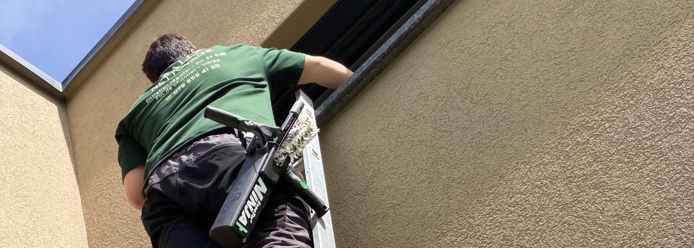

- Recette pro : eau + un peu de liquide vaisselle, rien de plus
- 3 outils selon la surface : raclette (petites vitres), perche télescopique (surfaces hautes), robot laveur (grandes baies vitrées)
- Mythe du soleil : avec le bon matériel, on peut nettoyer à toute heure
- Zones à ne pas oublier : rainures, encadrements, joints, verrière
- Saison estivale : pollen, poussière et fientes d'oiseaux, plus fréquents en été
Cet article se concentre sur les vitres extérieures et la saison estivale. Pour la méthode générale et les erreurs classiques (intérieur + extérieur), consultez notre guide Vos vitres restent toujours striées après le nettoyage ? Voici pourquoi.
Le mythe du « jamais en plein soleil » est en partie faux
Presque tous les articles sur les vitres commencent par la même consigne : « ne nettoyez jamais en plein soleil, cela fait sécher le produit trop vite et laisse des traces. » Cette règle est vraie pour un particulier avec une méthode standard. Elle est fausse pour un professionnel équipé.
Sur le terrain, nous nettoyons des vitres extérieures à toute heure de la journée en pleine saison estivale. La différence tient à trois choses :
- Un matériel adapté (raclette bien affûtée, microfibres de qualité)
- Une solution bien dosée (peu concentrée, elle sèche moins vite)
- Une méthode de travail zone par zone (on ne laisse jamais une vitre « à moitié faite »)
Si vous êtes équipé correctement, l'heure importe peu. Si vous utilisez un tissu de fortune et un produit surdosé, alors oui, mieux vaut travailler à l'ombre.
La recette pro : plus simple que tout ce que vous imaginez
Voici ce que nous utilisons pour nettoyer les vitres extérieures :
- De l'eau tiède (pas chaude, pas froide)
- Une petite goutte de liquide vaisselle
C'est tout.
Pas de produit spécifique à 20 CHF le litre, pas de vinaigre, pas de mélange miracle. Le liquide vaisselle a exactement les propriétés nécessaires : il dissout les graisses et les résidus, il ne mousse pas trop, et il s'élimine facilement.
Pourquoi cette simplicité fonctionne :
- Le liquide vaisselle est conçu pour éliminer les graisses (traces de doigts, fientes d'oiseaux, résidus de pollution)
- Il ne laisse pas de film s'il est bien rincé (contrairement à certains produits commerciaux)
- Il est économique (quelques centimes par nettoyage complet)
- Il est sûr pour toutes les surfaces vitrées
Trois outils, trois usages : la combinaison pro
Un professionnel n'utilise jamais un seul outil pour toutes les surfaces. Le bon geste dépend du type de vitre. Voici notre combinaison réelle sur le terrain.
La raclette professionnelle : pour les vitres accessibles
C'est l'outil de base pour toutes les fenêtres accessibles à hauteur d'homme :
- Fenêtres du rez-de-chaussée
- Portes vitrées
- Petites baies vitrées
- Fenêtres de salle de bain, cuisine, chambres
Notre méthode : mouiller à l'éponge, appliquer la solution, tirer la raclette de haut en bas en essuyant la lame après chaque passage. Finir les bords à la microfibre.
La perche télescopique : pour les surfaces hautes
Indispensable pour toutes les vitres inaccessibles sans échelle :
- Fenêtres d'étage
- Baies vitrées en hauteur
- Vitres de véranda et verrière
- Fenêtres de toit accessibles depuis l'extérieur
Pourquoi la perche est un vrai gain : elle évite l'échelle (donc les risques de chute), elle permet de nettoyer plus de vitres en moins de temps, et elle donne un excellent résultat avec le bon embout microfibre.
Le robot laveur de vitres : pour les grandes surfaces
Pour les grandes baies vitrées, les vitrages panoramiques et les verrières importantes, le robot laveur devient l'outil le plus efficace.
Ses avantages : il travaille en autonomie (aspiration à ventouse), sans laisser de traces, sur des surfaces beaucoup plus grandes que ce qu'un opérateur peut faire à la main. C'est aussi un vrai plus pour la sécurité sur les grandes surfaces d'étage.

Tableau récapitulatif : quel outil pour quelle vitre
| Type de surface | Outil recommandé | Pourquoi |
|---|---|---|
| Fenêtres du rez-de-chaussée | Raclette professionnelle | Rapide, précis, économique |
| Fenêtres d'étage sans échelle | Perche télescopique | Sécurité + gain de temps |
| Vitres de véranda accessibles | Raclette + perche selon hauteur | Combinaison selon les zones |
| Grande baie vitrée panoramique | Robot laveur + finitions à la raclette | Efficacité maximale sur grande surface |
| Fenêtres de toit (Velux) | Perche télescopique dédiée | Angles particuliers |
| Portes vitrées | Raclette | Standard, rapide |
| Vitrage anti-effraction ou blindé | Raclette avec précaution | Éviter tout outil dur qui rayerait |
Les zones que tout le monde oublie
Nettoyer une vitre ne se limite pas à sa surface transparente. Trois zones font souvent la différence entre un travail amateur et un travail pro.
Les rainures et joints
La poussière et le pollen s'accumulent dans les rainures du dormant (partie fixe de la fenêtre). Un coup d'aspirateur préalable ou une brosse douce évite que ces débris ne salissent votre eau propre lors du nettoyage.
Les encadrements extérieurs
Souvent en aluminium ou PVC, ces encadrements se salissent tout autant que la vitre : pluie, pollution, fientes d'oiseaux. Un passage à l'eau savonneuse en même temps que la vitre les remet à neuf.
Le bas de fenêtre extérieur (l'appui)
C'est là que s'accumulent poussière, pollen, résidus divers. On l'oublie souvent parce qu'il est peu visible depuis l'intérieur, mais un simple passage à la microfibre humide fait toute la différence esthétique.
L'été : ce qui change pour les vitres extérieures
En été, plusieurs facteurs saisonniers augmentent la fréquence de nettoyage souhaitable :
- Pollen : dépôts jaunâtres visibles en fin de printemps et début d'été
- Poussière fine : plus présente pendant les périodes sèches
- Fientes d'oiseaux : plus fréquentes en saison de nidification
- Résidus d'orages : gouttes séchées avec particules fines de l'atmosphère
- Insectes écrasés : moucherons et petites bêtes en soirée
Une intervention en début d'été et une autre en fin de saison (septembre) suffisent généralement pour un logement standard. Pour les vérandas et grandes baies vitrées très exposées, une fréquence légèrement supérieure est justifiée.
Des vitres extérieures parfaites, sans y passer votre dimanche
Nettoyage de vitres dans toute la Broye, Vaud & Fribourg · Ponctuel ou régulier · Devis en 24h
Voir le service nettoyage de vitres →FAQ – Nettoyer ses vitres extérieures
Faut-il vraiment nettoyer ses vitres en dehors du plein soleil ?
Non, pas nécessairement. Cette règle vaut surtout pour un particulier avec un tissu standard et un produit surdosé qui sèche trop vite. Avec un bon matériel (raclette pro, microfibre, solution bien dosée) et un travail zone par zone, on peut travailler à toute heure. Le confort personnel est un meilleur critère que l'ombre en été.
Peut-on vraiment nettoyer avec seulement de l'eau et du liquide vaisselle ?
Oui, c'est ce que nous utilisons professionnellement. Une seule goutte de liquide vaisselle dans un seau d'eau tiède suffit largement. Cette recette dissout les graisses, ne laisse pas de film si elle est bien rincée, coûte quelques centimes et donne un résultat identique aux produits spécifiques du commerce. La quantité est le point clé : trop de produit fait mousser et laisse des traces.
Quel outil choisir pour nettoyer des vitres en hauteur sans risque ?
La perche télescopique est le meilleur choix pour l'immense majorité des cas. Elle évite l'échelle (donc les chutes), permet de couvrir plus de vitres en moins de temps et donne un excellent résultat avec un embout microfibre adapté. Pour les très grandes surfaces (baies vitrées panoramiques), un robot laveur de vitres avec ventouse est encore plus efficace.
À quelle fréquence nettoyer ses vitres extérieures ?
Pour un logement standard, deux fois par an suffisent généralement : une intervention en début d'été (après les pollens du printemps) et une en fin de saison (septembre-octobre). Pour les vérandas, grandes baies vitrées et vitrages très exposés, une fréquence trimestrielle donne un meilleur rendu visuel constant.
Que faire des fientes d'oiseaux séchées sur une vitre ?
Ne jamais gratter à sec. Il faut d'abord ramollir la trace : pulvériser abondamment la solution eau + liquide vaisselle, laisser agir 3 à 5 minutes, puis retirer délicatement avec une microfibre. Si nécessaire, répéter. Gratter avec un outil dur peut rayer définitivement le vitrage, surtout sur les vitres traitées anti-reflet ou anti-UV.
En résumé
Nettoyer ses vitres extérieures ne demande ni équipement luxueux ni produit magique. La méthode pro tient en trois principes : choisir le bon outil selon la surface (raclette, perche télescopique, robot laveur), utiliser une recette simple (eau + une goutte de liquide vaisselle) et penser aux zones oubliées (rainures, encadrements, appuis). Le mythe du « jamais en plein soleil » ne vaut que pour une méthode amateur. Avec le bon matériel, l'heure importe peu — votre confort personnel devient le vrai critère.